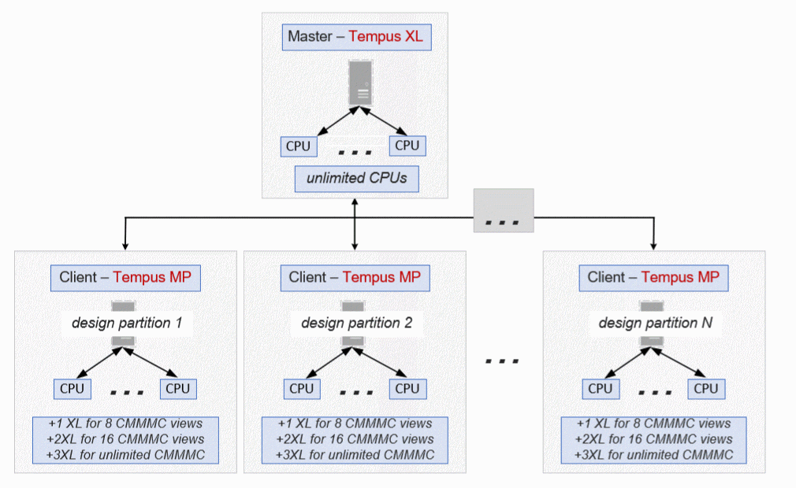

Tempus License Options for CMMMC in DSTA Mode
Tempus DSTA can distribute a CMMMC job across multiple computers. Each computer performs local multi-threading. The licensing requirements are given below:
- The master process requires an XL license:
- Each client requires a Tempus MP license - and licenses CMMMC just like non-DSTA jobs:
-
The required minimum configuration for this setup is 3 XL + 2 MP.
Figure -4 CMMMC license requirements in DSTA mode

- Run CMMMC with 6 views across 5 computers = 1XL + 5MP +5 XL = 80 CPUs (5 clients@16)
- Run CMMMC with 10 views across 3 computers = 1XL + 3MP + 6XL= 48 CPUs (3 clients@16)
Related Topics
- Tempus License Options for Single View Distributed STA (DSTA)
- Tempus License Options for Distributed MMMC (DMMMC)
- Tempus License Options for Concurrent MMMC (CMMMC)
Return to top